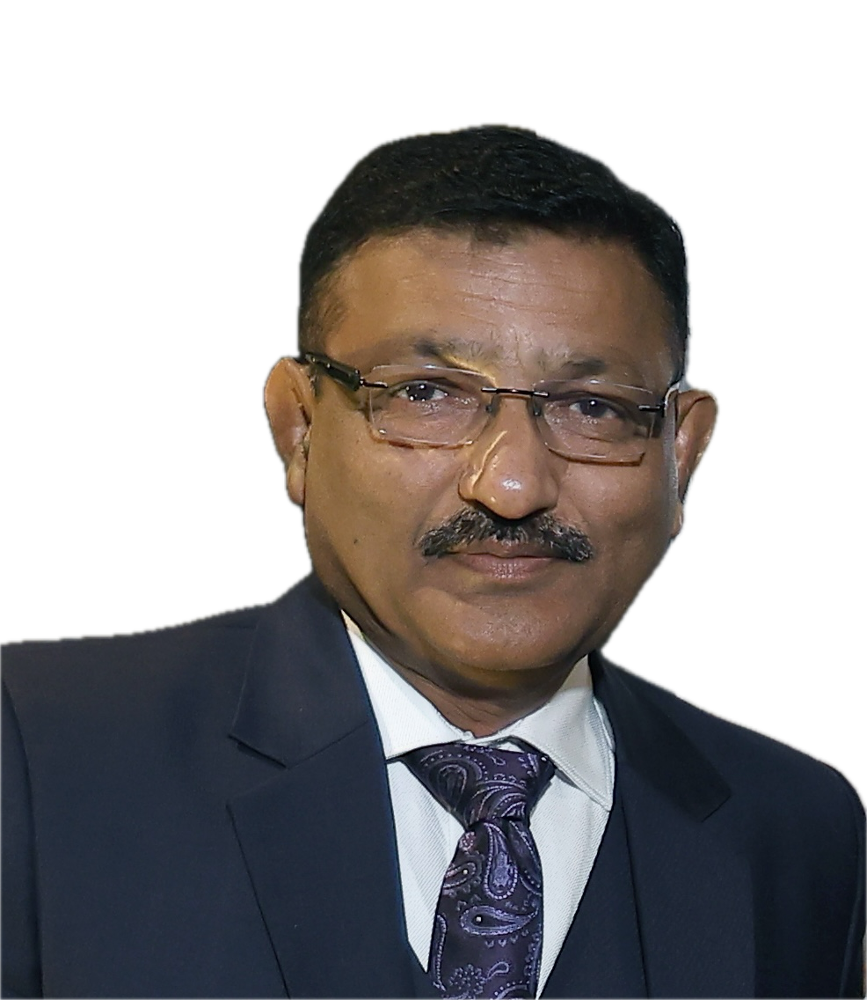
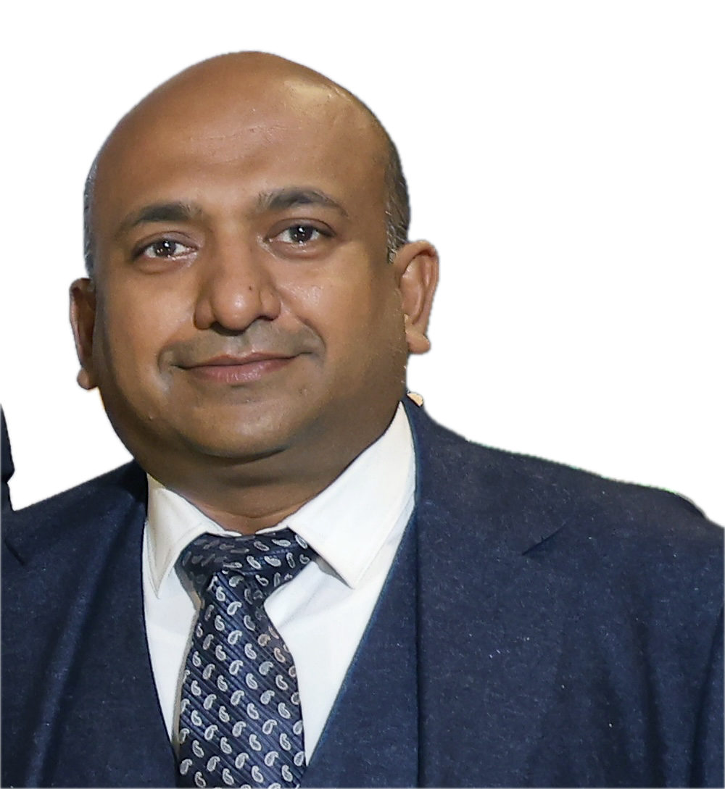
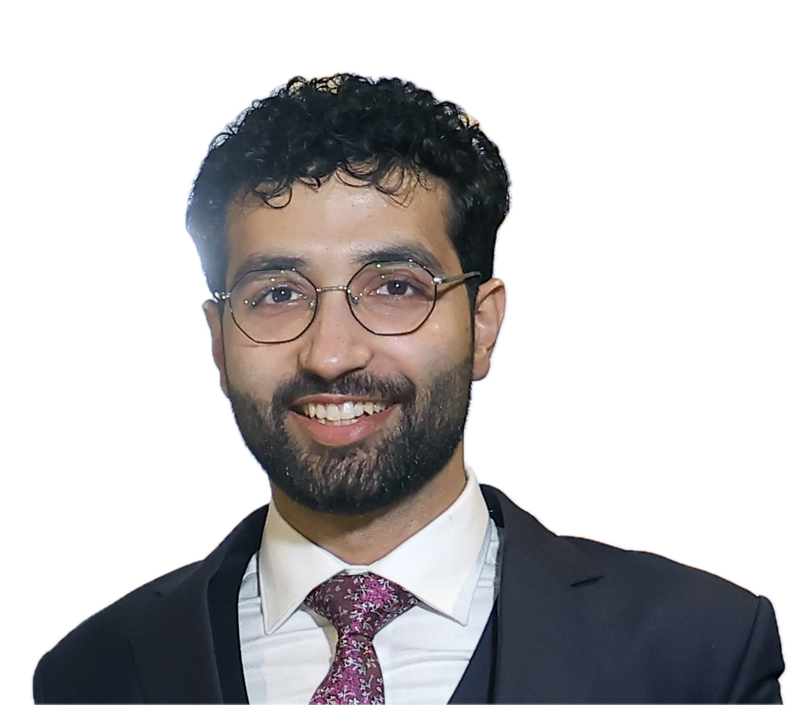

Localization and Integration
Mission-system integration aligned to sovereign operational requirements.
About Us
Defense-technology integration for sovereign mission readiness.
Technical Focus
Astraeus Dynamics is a defense-technology integrator specializing in the localization and enhancement of combat-proven aerial platforms. Our mission is to bridge global aerospace engineering with Indian sovereign requirements. By integrating indigenous navigation (NavIC) and AI-driven autonomy (XENA) into battle-hardened hardware at our Rudrapur manufacturing hub, we deliver high-assurance tactical properties for the Indian Armed Forces.
Core Capabilities
Mission-system integration aligned to sovereign operational requirements.
NavIC-aligned navigation and XENA AI-driven autonomy stack deployment.
Rudrapur-centered production and assembly for high-assurance tactical properties.
Team
Leadership and execution across operations, technology, and delivery.

A former mechanical engineer with over 25 years of industry experience, now leading an education institute focused on developing future talent and practical learning.

A medical professional (MBBS) with extensive experience in pharmaceutical business operations in Ukraine, bringing insight into healthcare systems and international industry practices.

A Computer Science student at the Technical University of Munich (TUM), specializing in technical systems and software integration with a strong interest in engineering-driven innovation.